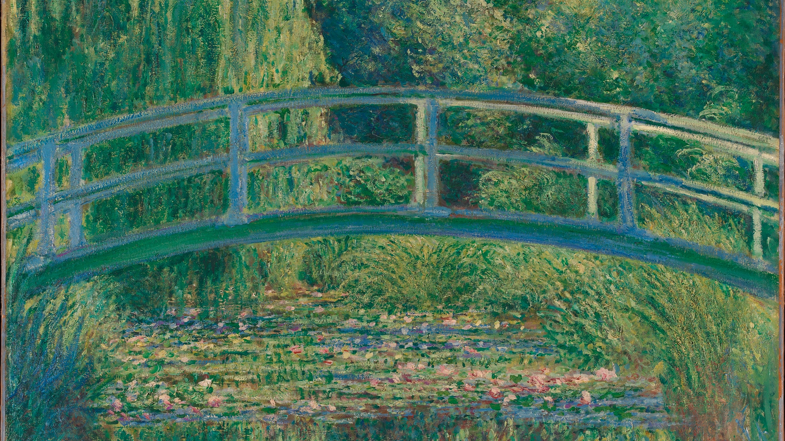

Disclaimer: My beliefs aren’t set in stone. Everything I post on my website is subject to change. Last Updated: February 2022
I'm Benjamin, a creator, thinker, engineering student, writer, explorer from Canada.
I use this website as a public journal ~ a collection of thoughts that expresses who I am. A physical representation of my brian space. A collection of content for personal use, for public reference.
My goal is to document things I've learned as I progress in life. Welcome :)
 Bridge over a Pond of Water Lilies by Claude Monet. He continued to paint even after his vision had been clouded by cataracts. A memorable piece.
Currently:
- Working as a Software Developer at Home Trust Company. Seeking Fall 2022 Internships!
Core Values & Beliefs
- Embrace discomfort, seek change: this is the only way to grow. Engage with life; try new things, eat different food, speak to different people, learn different skills, travel. Grow your perspective. You’ll learn a lot about yourself in the process. Start somewhere.
- People make the world special, but learn how to enjoy your own company: contradictory, I know. Some of my fondest memories have been with friends, and there no doubt regarding the power of community. I live to connect with people in meaningful ways. Yet, you’re not always going to have people around you, and it’s important to learn to enjoy your own company and love yourself.
- Comparison is the thief of joy: The internet has made it exceedingly easy to compare yourselves to others. Realizing this is liberating. Limit your consumption of social media and enjoy the people present in your life.
- The most fulfilling experiences are difficult: Hardships and challenges are what make achieving something fulfilling. Anything worth doing is hard.
Noteworthy Posts
- Post #1
- Post #2
- Post #3